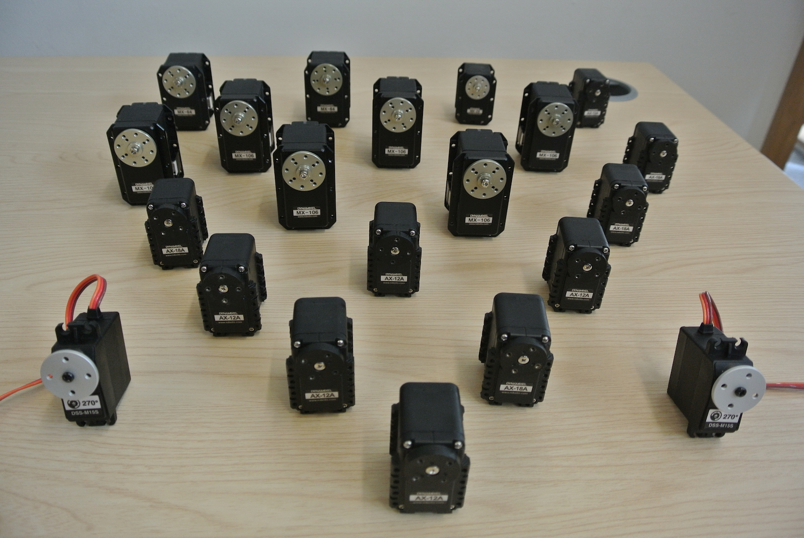
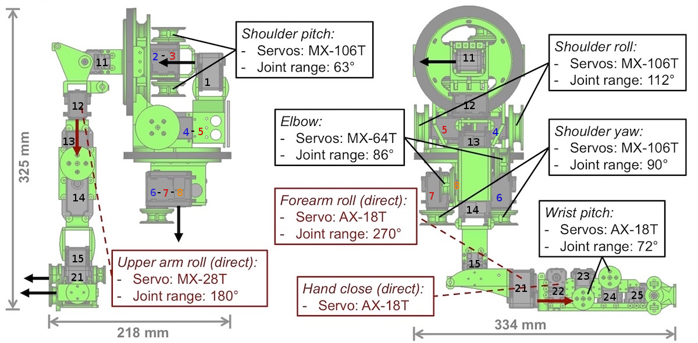

Running the GummiArm requires in total 19 motors (+2 optional for the hand). All of them (excepts the optional ones) are Dynamixel ones. This hardware part costs 4430 $ (see homepage for further information)

Here is the latest layout of the GummiArm. You can see on the following picture numbers on each motor, it corresponds to the ID we chose. We numbered that way to enable future modifications (adding articulated parts) without having to re-ID all the servos. Servos 1-8-11-15-25 and 101 (used for the head but not on the drawing) are Dynamixel AX-12A (you can of course use AX-12+). Servos 2-3-4-5-6-7 are Dynamixel MX-106. The rest is mentionned on the layout.

Important: Before going ahead with building the arm, we would like to specify one point about the AX-12A's used as encoder in all the agonist-antagonist joints. For all of them (except ID 101), we opened the servo to take off all the little gears to use them like an encoder. These "unmotorised servos" are used to enable rotating moves. You can find great tutorials to learn unmounting/mounting here. This cannot be done once the arm is fully built, as the encoders are embedded in the structure of the arm.